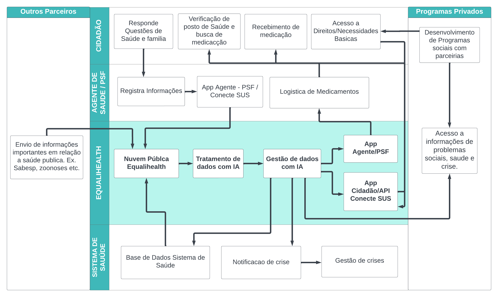

ODS Atendidas


Nós podemos salvar vidas, simplesmente inovando um processo, usando a tecnologia em nuvem e a inteligência artificial para melhorar a infraestrutura!
Veja a diagramação do projeto que estamos oferecendo.



CHATGPT:
Utilização:
Criação do nome do grupo.
Elaboração da documentação inicial.
Simulação de avaliação do projeto.
Levantamento de dados para análise.
CANVA:
Utilização:
Criação de vídeos e imagens para apresentação visual.
Apoio na criação de elementos gráficos para o projeto.
MIDJOURNEY:
Utilização:
Ferramenta utilizada na criação do logotipo do grupo, agregando elementos visuais distintivos à identidade visual do projeto.
TURBOLOGO:
Utilização:
Colaboração na criação e design do logotipo do grupo, adicionando elementos visuais que representam a inovação e a solidariedade.
BARD:
Utilização:
Pesquisa e estruturação do projeto, fornecendo insights valiosos para a elaboração do plano e a identificação de desafios técnicos.
Cada uma dessas ferramentas desempenhou um papel fundamental no desenvolvimento do projeto, contribuindo para sua concepção, design e pesquisa. A sinergia entre essas plataformas proporcionou uma abordagem abrangente e inovadora na criação do projeto.
A digitalização emerge como um elemento central na transformação do sistema de saúde. Atualmente, a gestão das cidades é feita de forma separada, como por exemplo: planejamento urbano, habitação social, saúde, educação, zoonoses, entre outros. As informações ficam restritas nesses departamentos e muitas vezes em formato impresso, impossibilitando a comunicação entre as áreas de gestão. Olhando para a área da saúde, há o Programa de Saúde da Família, que faz parte do Sistema Único de Saúde, em que há a coleta de informações da população que reside nos setores que cada Unidade de Saúde atende. Essas informações são coletadas através de pranchetas de forma presencial pelos agentes comunitários. Com esses dados, algumas unidades, para facilitar a visualização, utilizam-se de um mapa físico com o bairro atendido, nele os profissionais identificam em quais residências há pacientes que possuem doenças crônicas, que precisam de acompanhamento e remédios controlados, como o caso da diabetes. O objetivo do EqualiHealth é, através de um sistema de gestão, informatizar esse processo de mapeamento e, através de ferramentas de Inteligência Artificial, gerar insights sobre a população para melhorar políticas públicas, como direcionamento de campanhas para conscientização e melhor distribuição de medicamentos de alto custo. Assim, o sistema permite uma coleta de dados mais eficiente, possibilitando análises mais precisas e rápidas, resultando em tomadas de decisão mais assertivas. Além disso, aprimorar o atendimento ao paciente, otimizar processos logísticos através da inovação, contribuir para a diminuição da desigualdade social, reduzir o uso de papel e, de maneira inovadora, empregar a inteligência artificial para gerar insights estratégicos. Este sistema propõe uma abordagem holística para uma abordagem eficaz na administração de recursos.
O EqualiHealth é uma plataforma abrangente de gestão que visa transformar a experiência tanto para gestores quanto para a população. Assim, a aplicação irá oferecer um panorama da população de determinadas regiões por meio de um mapeamento sociodemográfico, com informações sobre saúde, educação, emprego, entre outros dados sociais. No contexto da saúde, as informações coletadas poderão gerar insights sobre doenças crônicas, uso de medicamento controlado, acompanhamento de pacientes com restrições de mobilidade que não podem ir até o posto de saúde. Com isso, o EqualiHealth irá proporcionar aos gestores uma visão geral das necessidades da população de forma contínua, uma vez que através de agentes de saúde há o contato mais próximo e atualizado do governo com os habitantes, evitando, assim, desperdícios e trazendo oportunidades iguais para todos.
A arquitetura do sistema é projetada para garantir a fluidez segura de dados. A plataforma implementa medidas robustas de segurança e privacidade para proteger informações sensíveis dos pacientes. A integração entre os diversos componentes do sistema é facilitada por uma arquitetura escalável e modular, permitindo a interoperabilidade entre postos de atendimento, farmácias e profissionais de saúde. A transparência e controle de acesso são prioridades, garantindo que apenas as partes autorizadas tenham acesso aos dados necessários.
A interface de gestão do EqualiHealth oferece ferramentas poderosas para administradores. O acompanhamento em tempo real dos níveis de estoque de medicamentos e equipamentos médicos permite uma gestão eficiente de recursos. O sistema automatizado de agendamento de consultas simplifica a marcação e gerenciamento de compromissos, enquanto a manutenção de perfis detalhados para médicos e pacientes possibilita um atendimento mais personalizado. A disponibilidade de exames é facilmente acessada, contribuindo para uma abordagem proativa na gestão da saúde.
A interface do usuário é intuitiva e centrada nas necessidades dos pacientes. A verificação da disponibilidade de medicamentos em farmácias próximas oferece praticidade na obtenção de prescrições. O acesso rápido aos resultados de exames e histórico de consultas promove uma maior participação e entendimento por parte dos pacientes. Além disso.
O EqualiHealth incorpora inteligência artificial de forma estratégica para otimizar o sistema de gestão de saúde. A análise preditiva utiliza IA para antecipar demandas de medicamentos e recursos hospitalares, garantindo uma distribuição eficiente. Sistemas de recomendação personalizados, baseados no histórico do paciente, proporcionam tratamentos mais individualizados. Além disso, o recurso de Mapeamento Socioeconômico utiliza a inteligência artificial para análise de dados demográficos, econômicos e sociais, fornecendo insights valiosos para aprimorar políticas de saúde e otimizar a alocação de recursos.
• Coleta de Dados: App para profissionais de saúde registrar informações dos pacientes durante visitas domiciliares.
• Integração com o SUS: Conexão com sistemas do SUS para acesso a dados de pacientes, disponibilidade de medicamentos e agendamento de consultas.
• Notificações e Avisos: Comunicação automatizada para pacientes sobre disponibilidade de medicamentos e consultas.
• Análise de Dados: Utilização de inteligência artificial para extrair insights e tendências dos dados coletados.
• ODS 3 - Saúde e Bem-Estar: EqualiHealth promove melhor acesso a informações de saúde, medicamentos e consultas, melhorando a qualidade de vida e o cuidado com a saúde da população.
• ODS 9 - Indústria, Inovação e Infraestrutura: A digitalização e integração do sistema de saúde promovem inovação na infraestrutura, beneficiando a eficiência e acessibilidade.
• ODS 10 - Redução das Desigualdades: Proporciona uma gestão de saúde integrada e baseada em dados, promovendo igualdade no acesso a serviços e recursos em diversas regiões.
• ODS 11 - Cidades e Comunidades Sustentáveis: Ao melhorar o sistema de saúde, EqualiHealth contribui para comunidades mais saudáveis e sustentáveis.
• ODS 12 - Consumo e Produção Responsáveis: Redução do uso de papel demonstra um compromisso com práticas mais sustentáveis.
• ODS 13 - Ação Contra a Mudança Global do Clima: redução no uso de papel, promoção de eficiência operacional e facilidor de práticas sustentáveis na gestão de saúde, contribuindo para a mitigação dos impactos ambientais e fomentando uma abordagem mais ecológica.
• ODS 17 - Parcerias e Meios de Implementação: abre possibilidades de colaborações interdisciplinares e internacionais, promovendo a integração de sistemas de saúde, compartilhamento de dados e parcerias estratégicas para impulsionar inovações e aprimorar a eficácia na administração de recursos de saúde em nível global.
Uma das principais conquistas do EqualiHealth é a significativa redução do uso de papel. Além de alinhar-se aos princípios de sustentabilidade, ao migrar para um ambiente digital, a plataforma elimina a necessidade de registros em papel, otimizando o tempo dos profissionais de saúde e reduzindo os custos associados à impressão e armazenamento físico. A transição para um sistema eletrônico não apenas preserva os recursos naturais, mas também simplifica os processos, permitindo uma rápida acessibilidade às informações cruciais.
A gestão eficiente de recursos e demandas é um ponto forte do EqualiHealth. Ao oferecer uma visão em tempo real dos níveis de estoque de medicamentos e equipamentos médicos, a plataforma capacita os gestores a tomar decisões informadas. Isso resulta em uma logística mais aprimorada, evitando desperdícios e garantindo que os recursos estejam disponíveis onde são mais necessários. A integração de ferramentas de inteligência artificial para análise preditiva impulsiona ainda mais a eficiência logística, permitindo antecipar demandas futuras e otimizar a distribuição de recursos.
O EqualiHealth não se limita a otimizar operações diárias; ele promove ações estratégicas baseadas em dados sólidos. A plataforma, ao extrair insights valiosos por meio de sua inteligência artificial e análise de dados, capacita gestores a tomar decisões estratégicas embasadas. Essas ações estratégicas incluem o direcionamento de campanhas de conscientização, a alocação eficiente de recursos em áreas críticas e a promoção de iniciativas preventivas. A abordagem orientada por dados impulsiona uma tomada de decisão mais precisa e eficaz, contribuindo para a melhoria contínua do sistema de saúde.
Escalando para Além da Saúde:
Educação: O EqualiHealth pode integrar-se ao sistema educacional, proporcionando uma visão holística dos desafios e necessidades dos alunos. Pode oferecer insights sobre desempenho acadêmico, necessidades especiais e ajudar na alocação eficiente de recursos educacionais.
Emprego: Ao incorporar dados sobre oportunidades de emprego e demanda por habilidades específicas, o EqualiHealth pode agir como uma ferramenta estratégica para governos e organizações que buscam otimizar políticas de emprego, treinamento e desenvolvimento de habilidades.
Saneamento: A expansão para a área de saneamento possibilita a monitorização eficiente das condições sanitárias em comunidades específicas. O EqualiHealth pode ser empregado para identificar áreas com necessidades urgentes de infraestrutura sanitária, contribuindo para a promoção de ambientes mais saudáveis.
Planejamento Urbano: A plataforma pode ser estendida para fornecer insights críticos para o planejamento urbano. Dados sobre mobilidade, distribuição populacional e uso do espaço podem orientar decisões estratégicas para melhorar a infraestrutura urbana, promovendo cidades mais sustentáveis e eficientes.
Benefícios Amplificados: Ampliando seu escopo para além da saúde, o EqualiHealth maximiza os benefícios de sua arquitetura inovadora. A redução do uso de papel, a logística aprimorada e a promoção de ações estratégicas agora transcendem setores, contribuindo para a construção de sociedades mais conectadas, informadas e sustentáveis.
Alcance Estadual: A escalabilidade do EqualiHealth é evidente ao ser aplicado em nível estadual. A plataforma pode integrar dados de múltiplas cidades, proporcionando insights abrangentes sobre as necessidades de saúde, educação, emprego e saneamento em uma escala estadual.
Ampliando para Outros Países: O EqualiHealth pode transcender fronteiras nacionais, adaptando-se a diferentes sistemas de saúde, políticas educacionais e realidades socioeconômicas, através da utilização de processamento em nuvem. Ao estender seus benefícios para outros países, a plataforma se torna uma ferramenta global na promoção de saúde e bem-estar.
Arquitetura Globalmente Conectada: A arquitetura do EqualiHealth é projetada para integrar dados de várias fontes, facilitando a adaptação a diferentes contextos e regulamentações. Sua interoperabilidade garante que a plataforma seja uma solução global, conectando e compartilhando informações em diferentes escalas geográficas.
Benefícios Amplificados Globalmente: Além dos benefícios de redução do uso de papel, logística aprimorada e ações estratégicas, a aplicação global do EqualiHealth amplifica seu impacto. A plataforma se torna uma ferramenta essencial para governos, organizações de saúde e agências globais na tomada de decisões informadas e na promoção de políticas públicas eficazes.